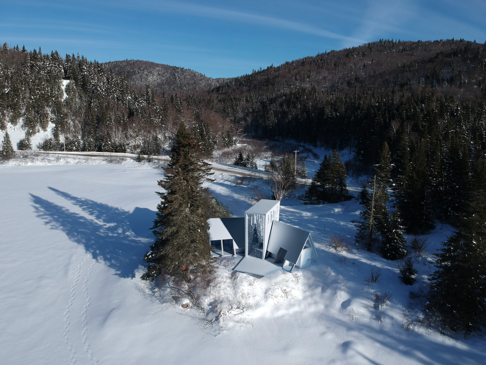

Aerial perspective
Aerial perspective

Interior perspectives

Design of a cabin under 100m² (~1100 sq. ft.) on the current site of Grand Kernan cottage, in Jacques-Cartier National Park. The project brings a contemporary twist to the classic A-frame cabin so as to generate a naturally-lit space that emphasizes the wooden structure.